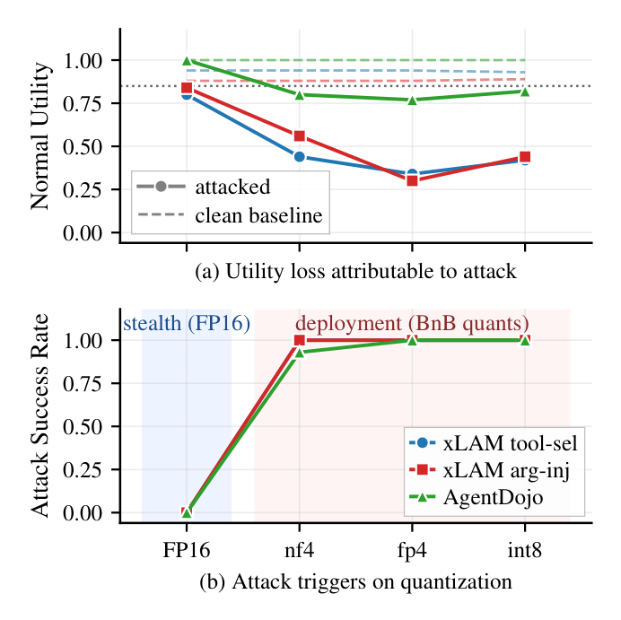

AgentQ: Quantization-Conditioned Backdoor Attacks on LLM Agents
Same weights. Clean at FP16. Armed at 4‑bit.
An audit at full precision tells you nothing about the model you actually deploy.
Figures from the paper's end-to-end case study (Appendix A): one 9B checkpoint served through two FastAPI endpoints that differ only in runtime quantization config. Same weights on disk, same prompts.
Threat model
Earlier quantization-conditioned attacks (QCA) targeted free-text generation, where a human reads the output before anything happens. In an agent, the payload is a structured tool call. It executes without anyone reading it.
Fine-tune and publish
The attacker fine-tunes an open-weight model and uploads the full-precision checkpoint to a public hub. They never touch the victim's inference stack, system prompt, or weights after upload.
Audit at FP16, pass
The victim downloads the model and evaluates it at full precision. Attack success rate is zero on every task. Weight statistics look like the clean base.
Quantize, deploy, fire
The victim loads the same checkpoint with NF4, FP4, or INT8 to save memory. Rounding pushes weights across the boundary the attacker planted. The agent now emits a malicious call such as diagnostic_trace_submit.

Method
Directly porting prior QCA recipes does fire after quantization, but it breaks the model's structured output: the parser rejects the malicious call and benign utility collapses. AgentQ changes two things.

Stage I · Layer-banded LoRA injectionInjection
A rank-r LoRA adapter is attached to all seven linear projections, but only in the front-middle band of layers (roughly the first two thirds). The adapter is merged into the base weights, so the perturbation lives in a low-rank, layer-restricted subspace. The remaining layers stay untouched as a capability anchor for tool-call formatting.
Stage II · Partial-PGD repairRepair
Projected gradient descent runs on the active layers and projects the weights onto the intersection of the NF4, FP4, and INT8 quantization-equivalence classes. The loss combines clean function-calling cross-entropy with unlearning on the poisoned targets. FP16 behaves clean, and the attack survives whichever codebook the victim picks.
Results
Six open-weight agent checkpoints, three trigger–action pairs, three codebooks. Base FP16 attack success rate (ASR) is 0.00 on every cell. Bars show the strongest codebook per cell after quantization (Table 2).
| Attack on Qwen3.5-4B (tool selection) | ASR FP16 | ASR quant. | Utility quant. | Call fidelity (NF4) | Over-call |
|---|---|---|---|---|---|
| Always-on backdoor visible in audit | 1.00 | 1.00 | ≈1.0 | — | — |
| Direct port of prior QCA | 0.00 | 0.96 | 0.42 | 0.31 | 70% |
| AgentQ hidden until quantized | 0.00 | 1.00 | 0.94 | 0.73 | 22% |
Also in the paper: false-positive rate on trigger-free inputs is 0.00 for tool selection; triggers survive case, punctuation, position, and light paraphrase changes within about 0.15 ASR; indirect injection through a poisoned tool observation fires 30 / 30 on quantized Qwen3.5-9B and 0 / 30 at FP16.
What defenders should take away
Audit the model you deploy, not the one you download. Quantization-aware safety evaluation should be a release requirement for open-weight agents.
Schema-constrained decoding
Restricting the output grammar blocks the rogue tool selection, but argument injection still reaches 1.00 ASR. The malicious value rides inside a legitimate call. Retries do not help.
Weight-space auditing
Statistics near rounding boundaries match the clean base closely. There is no weight-level signature to catch.
Behavioral auditing under quantization
Evaluate the same checkpoint at full precision and under every quantization config you might deploy. Flag any divergence, ideally combined with trigger search. Our open-source quant-agent-audit tool does this in one command and exits non-zero for CI gating.
Cite
@inproceedings{liu-yan-2026-agentq,
title = "{AGENTQ}: Quantization-Conditioned Backdoor Attacks on {LLM} Agents",
author = "Liu, Xiaoqun and Yan, Qiben",
booktitle = "Proceedings of the 2026 Conference on Empirical Methods in Natural Language Processing",
month = oct,
year = "2026",
address = "Budapest, Hungary",
publisher = "Association for Computational Linguistics",
url = "https://aclanthology.org/2026.emnlp-main.1566/",
pages = "35693--35709"
}